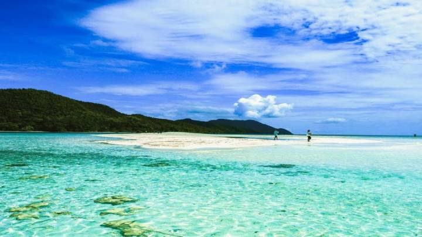

Raja Ampat

Pantai yang terletak di Pulau Waisai ini terkenal dengan
hamparan pasir putihnya yang menawan. Deburan ombaknya pun tak terlalu keras,
sehingga cocok banget buat kamu yang pengin mencari ketenangan. Kepulauan Raja Ampat
merupakan rangkaian empat gugusan pulau yang berdekatan dan berlokasi di barat bagian
Kepala Burung Pulau Papua. Secara administrasi, gugusan ini berada di bawah Kabupaten
Raja Ampat, Provinsi Papua Barat.